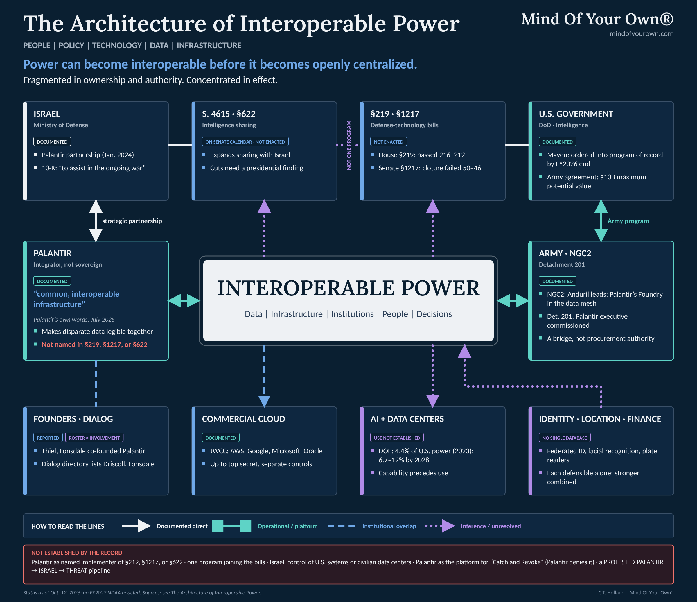
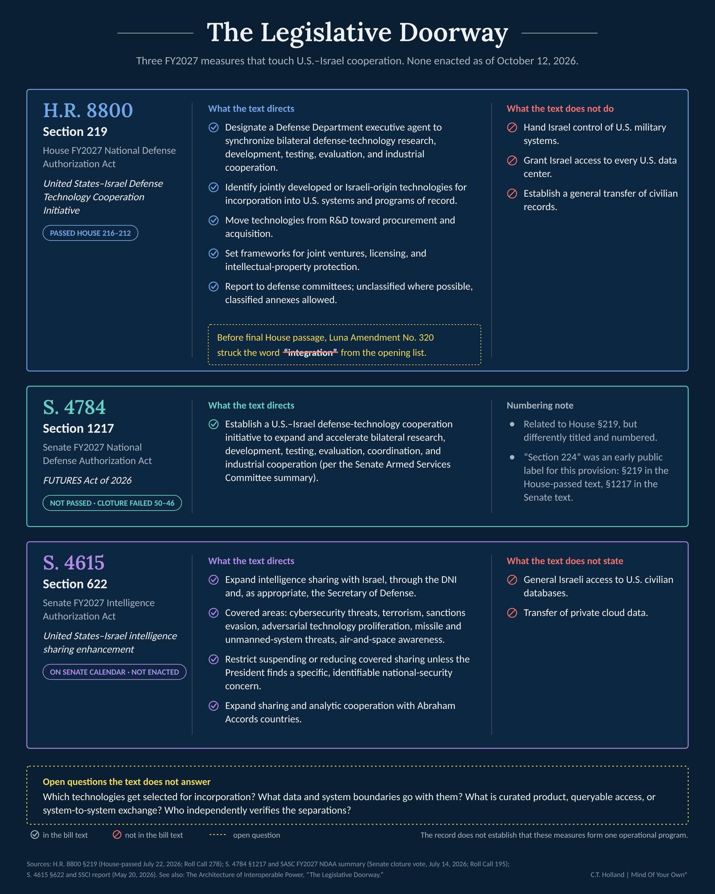
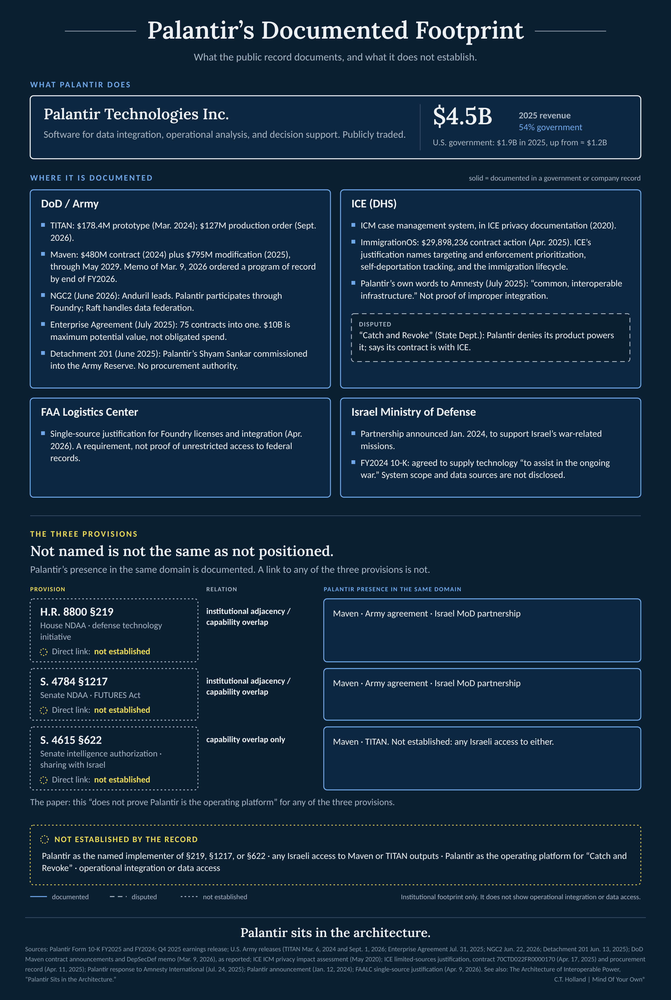

It began with a video—one of countless clips circulating online. I no longer know which one.
The claims that sent me into the record were wild. Some were overheated. Some were simply unsupported: FEMA camps, plastic coffins, a foreign government being handed the keys to every American data center, claims stated as established fact when the legislation itself did not establish them. That would have made it easy to throw the whole thing away. That would have been a mistake.
Because underneath the exaggeration was something real. And once you start pulling on the thread, the story gets considerably more serious than the video.
The thread leads into the 2027 National Defense Authorization Act. From there it leads into proposed frameworks for deeper technological cooperation between the United States and Israel. It leads into artificial intelligence, autonomous systems, cyber systems, procurement, integration, and industrial collaboration. It leads into a separately proposed expansion of intelligence sharing. It leads into private platforms built to make fragmented information usable together. It leads into the expanding physical infrastructure required to make systems like these function at scale. And it leads into the people financing, building, buying, regulating, and governing those systems.
And somewhere along the way, the question changes.
The question stops being whether somebody built one secret machine.
The question becomes what happens when all the machines can talk to one another.
That is not a claim that they already do. It is not an allegation that civilian data, commercial cloud workloads, military systems, intelligence products, foreign partners, and private platforms have all been joined into one command structure. The public record does not establish that.
It is a different proposition. Separate systems can become functionally significant when the barriers between them—technical, contractual, administrative, legal, financial, and institutional—become lower than they once were. A system does not have to merge formally in order to become interoperable in practice. It does not require one owner, one database, one agency, or one public announcement. It may require only a standard, a contract, an accredited cloud environment, an API, a shared identifier, an access permission, a procurement decision, an authorized query, a data-sharing agreement, a licensing arrangement, or a new use case added to infrastructure that already exists.
Functional integration can become profound long before anybody announces a formal merger.
The task is therefore not to repeat the claims that started the inquiry. It is to separate what can be documented from what remains unknown, and then ask the questions the documented architecture has earned.

The Legislative Doorway
The most important correction to the initial story is also the first evidence of why precision matters.
There is no enacted FY2027 National Defense Authorization Act as of October 12, 2026. The House passed H.R. 8800 on July 22. The Senate is working from a separate vehicle, S. 4784; on July 14, cloture on the motion to proceed failed 50–46, and the Senate has not passed that bill. The relevant measures therefore remain inside the 119th Congress’s legislative process. Section numbers are not stable across House, Senate, committee, conference, and enacted versions. A provision referred to as “Section 224” in early public discussion is Section 219 in the House-passed H.R. 8800, while the Senate bill places the related FUTURES provision at Section 1217.12
That fact does not weaken the inquiry. It tells us where the inquiry begins.
Section 219 of the House-passed bill is titled the United States–Israel Defense Technology Cooperation Initiative. It directs the Secretary of Defense to designate an executive agent responsible for synchronizing U.S.–Israel cooperative efforts to expand and accelerate bilateral defense-technology research, development, testing, evaluation, and industrial cooperation. Before final House passage, the House adopted Luna Amendment No. 320, which struck the word “integration” from this opening list.34
That amendment is not a trivial editorial detail. It is the difference between reporting a committee-stage formulation and reporting the House-passed text. The final House language nonetheless directs the executive agent to identify jointly developed or Israeli-origin technologies with potential operational utility for incorporation into U.S. systems and programs of record; facilitate research involving governmental, private-sector, and academic institutions; move technologies from research and development toward procurement and acquisition; and establish frameworks for joint ventures, licensing, intellectual-property protection, and other forms of industrial cooperation.5
The Senate’s S. 4784 uses a different structure and title: the United States–Israel Framework for Upgraded Technologies, Unified Research, and Enhanced Security Act of 2026, or FUTURES Act. It appears in the Senate bill at Section 1217, not Section 224. The Senate Armed Services Committee’s public summary describes it as establishing a U.S.–Israel defense-technology cooperation initiative to expand and accelerate bilateral research, development, testing, evaluation, coordination, and industrial cooperation.67
Those words matter: research, development, testing, evaluation, and industrial cooperation. The final House text no longer uses “integration” in its introductory list, but it still contemplates an institutional pathway by which jointly developed or Israeli-origin technologies may move toward incorporation into U.S. systems and programs of record. That is where the story becomes more than an ordinary arms-transfer story.
A country can purchase another country’s equipment while maintaining relatively clean technical boundaries between the systems. Incorporation into a program of record raises different questions. Can the equipment operate with existing systems? Can it enter acquisition pathways? Can common standards, interfaces, supply chains, software, training, logistics, or communications arrangements make it operationally useful in another environment? Are joint ventures and licensing arrangements creating enduring private-sector relationships around the technology? Are systems being designed with common use, compatibility, or future interoperability in mind?
None of this means that all systems share all data. It does mean that “cooperation” is not a word without material consequences.
The House text also requires the executive agent to protect sensitive technology and information and the national-security interests of both countries. It requires recurring reports to congressional defense committees, directs that reports be submitted in unclassified form when possible, and allows classified annexes. That structure acknowledges both the public significance of the initiative and the fact that important operational details may remain inaccessible to the public.8
The bill does not hand Israel control of U.S. military systems. It does not grant Israel access to every U.S. data center. It does not establish a general transfer of civilian records. Those claims would go beyond the text.
But the bill does propose an institutional structure for deeper defense-technology cooperation, including the identification and potential incorporation of technologies into U.S. systems and procurement pathways. The public question is not whether the bill says everything. The public question is what forms of technical connection it contemplates, which technologies are eventually selected, what data and system boundaries accompany those choices, and what oversight can meaningfully examine the result.
That is the difference between refusing speculation and refusing inquiry.
Intelligence Sharing, and the Line That Must Be Seen
A second legislative measure makes the boundary question sharper.
The Senate’s FY2027 Intelligence Authorization Act, S. 4615, includes Section 622, titled “United States–Israel intelligence sharing enhancement.” As introduced and reported publicly, the provision directs the President, acting through the Director of National Intelligence and, as appropriate, the Secretary of Defense, to expand and enhance intelligence sharing with Israel in specified areas. Those areas include cybersecurity threats, terrorism, sanctions evasion, adversarial technology proliferation, threats from missile and unmanned systems, and air-and-space awareness.910
The same provision would restrict the suspension, reduction, or material limitation of intelligence sharing in the covered areas unless the President determines that a specific, identifiable national-security concern requires it. It also directs expanded intelligence-sharing and analytic cooperation with countries that normalized relations with Israel under the Abraham Accords, subject to the provision’s terms and applicable law.11
That is more than an invitation to cooperate. It creates a ratchet: once covered sharing is expanded, scaling it back would require a specific presidential national-security determination. The proposal therefore concerns not only how sharing begins, but how difficult it may become to reduce.
The language is significant. It does not authorize general access to U.S. civilian databases or private cloud data. That boundary matters. It does not make the ratchet insignificant.
But it raises questions that should not be dismissed merely because more dramatic claims are unsupported. When intelligence sharing is expanded, what categories of information are shared? Through which authorities, platforms, liaison arrangements, and technical environments? What is manually curated intelligence product, what is queryable access, what is system-to-system exchange, and what is excluded? Which privacy, minimization, classification, source-protection, contractual, and access-control rules govern those decisions? Which body can independently confirm that a stated separation between civilian, commercial, military, intelligence, and foreign-partner environments is actually operating as described?
The point is not to announce that a line has been crossed. It is to ask who can see the line, who drew it, who can move it, and what record would show the public that it still holds.
There is a difference between intelligence sharing and indiscriminate data sharing. There is a difference between a bilateral security relationship and foreign control of domestic systems. There is a difference between a technical possibility and a documented operational pipeline. Those distinctions should not be used to shut down scrutiny. They are what make the warning harder to evade.
Now put the two legislative tracks next to one another. On one side are proposed structures for deeper bilateral defense-technology research, acquisition, technical incorporation, industrial cooperation, and technology transition. On the other is a proposed intelligence-sharing enhancement, including restrictions on certain future reductions in the sharing of covered intelligence.
The record does not establish that they form one unified operational program. It does establish that Congress is considering a more durable architecture of cooperation across defense technology and intelligence domains. That is enough to warrant attention.

Palantir Sits in the Architecture
Then put Palantir into the picture.
Palantir is not a speculative character in this story. It is a publicly traded corporation whose government business is central to its financial profile and whose products are explicitly designed for data integration, operational analysis, and decision support.
In its 2025 annual report, Palantir reported $4.5 billion in revenue, of which 54 percent came from government customers. It reported $1.9 billion in U.S. government revenue for 2025, up from approximately $1.2 billion the prior year.12 Its public filings describe government customers as including entities in defense, intelligence, health, and other public sectors. The company’s business is not limited to government, but its government footprint is not incidental.
The company’s products are often discussed as though they were simply databases. They are not best understood that way. Palantir’s own product descriptions present Gotham and Foundry as platforms for bringing data into a common operating environment, modeling relationships, controlling permissions, conducting analysis, building workflows, and supporting decisions. Its Ontology framework is designed to map digital objects, relationships, actions, and business or operational processes so that users can work across systems without treating every dataset as an isolated file. Apollo supports deployment and management of software across different environments.13
The company does not need to own the data. It needs to make disparate data legible together.
That is the power of fusion.
This does not mean Palantir independently controls the data of every customer using its tools. In government deployments, legal authority, system access, source data, permissions, and operational decisions remain governed by the customer’s contracts, policies, laws, and technical configurations. A platform can be capable of integration without possessing universal access. A vendor can be an integrator without becoming the sovereign authority over the underlying data.
That boundary matters. It is also where much of the real governance question resides.
A contractor can say it provides a tool. An agency can say it controls the records. A cloud provider can say it supplies infrastructure. A human official can say they made the final decision. Yet the combined environment may determine which data can be found, linked, prioritized, visualized, scored, or presented for action. The formal decision may remain human. The practical field of attention may be computationally organized.
Palantir’s public defense record demonstrates why this distinction cannot be dismissed as theoretical. The Department of Defense and Army have awarded and publicly announced Palantir work in areas including data platforms, artificial intelligence, command-and-control, logistics, and decision support. The company’s own 2025 filing says Gotham integrates data from across domains and sensors in near real time for defense and intelligence missions; it describes Foundry as a platform for integrating data, logic, and action; and it states that the company began in 2003 building software for the U.S. intelligence community’s counterterrorism investigations and operations.1415
The scale of that footprint is now unusually explicit. The Department of Defense awarded Palantir a $480 million Maven Smart System contract in 2024 and a $795 million software-license modification in 2025, extending the contract through 2029. A March 2026 Pentagon directive ordered Maven’s transition into a formal program of record, moving it from an important platform toward institutional permanence inside the department. In July 2025, the Army consolidated 75 Palantir contracts into one enterprise agreement with a maximum potential value of $10 billion over as long as ten years. And in June 2026, the Army announced that Anduril would lead the Next Generation Command and Control common data baseline, with Anduril Lattice and Palantir Foundry providing an edge-to-cloud data mesh and Raft supporting registries, transformation, and data federation. Those are not speculative relationships. They are contract, procurement, and architecture decisions that place Palantir inside the military’s evolving data and decision infrastructure.16171819
The commercial–military boundary is being crossed through personnel as well as contracts. On June 13, 2025, the Army commissioned Shyam Sankar of Palantir, Andrew Bosworth of Meta, Kevin Weil of OpenAI, and Bob McGrew, formerly of OpenAI and then an adviser to Thinking Machines Lab, as Army Reserve lieutenant colonels in Detachment 201, the Executive Innovation Corps. The Army said the officers would serve part-time as senior advisers on targeted projects and described the initiative as bringing “private-sector know-how into uniform.” The commissions do not establish procurement authority. They do establish a formal institutional bridge between senior commercial AI leadership and the military.20
The specific purposes, authorities, and access controls differ by program. The common theme is not that one platform sees everything; it is that platforms capable of integration can become important connective infrastructure within complex institutions.

The same applies to immigration and homeland-security questions. Publicly available procurement material and congressional reporting show that Immigration and Customs Enforcement has used Palantir systems, including the Investigative Case Management system, in connection with investigations and operational case work. Civil-liberties organizations and journalists have criticized aspects of those deployments; agency and company descriptions have emphasized investigative and operational functions. The exact data sources, user permissions, legal authorities, and usage practices must be evaluated program by program. No responsible account should imply access beyond what those records establish.21
In 2025, however, the record became considerably more concrete. ICE’s limited-sources justification for Palantir’s expanded ImmigrationOS work names three mission areas: Targeting and Enforcement Prioritization, Self-Deportation Tracking with near-real-time visibility, and an end-to-end Immigration Lifecycle Process from identification to removal.22 Palantir later told Amnesty International that it was not providing the operating system for the State Department’s separate “Catch and Revoke” effort and stressed that its contract was with ICE. In the same response, Palantir described its recent expansion as including work that directly serves ICE Enforcement and Removal Operations and, more broadly, argued for “common, interoperable infrastructure” to support the delivery of public services. The phrase is Palantir’s own. It does not establish improper integration; it does establish that interoperability is part of how the company itself describes the public-sector infrastructure it is helping build.23 That distinction should be preserved. So should what it reveals. Policy authority, enforcement authority, contractor infrastructure, and the data layer do not have to sit in the same institution for the person on the receiving end to experience one continuous administrative consequence.
And Palantir also has a documented relationship with Israel’s Ministry of Defense. In January 2024, Palantir announced that it had entered a strategic partnership with the Israeli Ministry of Defense to supply Palantir technology in support of Israel’s war-related missions. The company said the agreement followed a meeting at which it discussed supplying technology to assist the Israeli war effort.24 Palantir’s own 2024 SEC filing is even plainer: the company disclosed that it had agreed to supply technology to Israel “to assist in the ongoing war.”25 That is not a generic commercial relationship described after the fact by a critic. It is the company’s own description of the purpose of the partnership.
A separate Microsoft case shows why the public/private boundary matters operationally, not only institutionally. In September 2025, Microsoft said its internal review had found evidence supporting elements of reporting about an Israeli Ministry of Defense unit’s use of Azure storage capacity in the Netherlands and AI services in connection with alleged mass surveillance of civilians in Gaza and the West Bank. Microsoft said it had not accessed the ministry’s customer content, but it ceased and disabled specified cloud-storage and AI subscriptions while the review continued. The episode makes the decision-rights problem concrete: a commercial provider can host consequential state workloads, enforce contractual limits, and terminate particular services while still operating under customer-content boundaries that constrain what it can inspect.26
That does not prove Palantir is the operating platform for the House NDAA provision, the Senate FUTURES Act, Section 622 of the Intelligence Authorization Act, or every form of U.S.–Israel security cooperation.
Not named is not the same as not positioned. A company can be absent from the statute while already supplying relevant institutions and capabilities. That makes its potential role a question for procurement and implementation records—not a conclusion established by the statute. The public record does not show Palantir as the named implementer of Sections 219 or 1217. It does show Palantir already embedded in relevant U.S. military systems and partnered with Israel’s Ministry of Defense. That is institutional adjacency and capability overlap—not proof of implementation, but not irrelevance either. Section 622 is the weaker edge: the capability overlaps, but no direct Palantir role in that intelligence-sharing mechanism has been established.
Palantir sits in the architecture.
The Danger Lies in Interoperability
A license plate by itself is a license plate. A phone record by itself is a phone record. A financial transaction is a transaction. A border crossing is a border crossing. A social-media account is an account. A government file is a government file.
The transformation occurs when systems connect them.
Identity becomes location. Location becomes association. Association becomes history. History becomes pattern. Pattern becomes prediction. Prediction becomes classification. Classification becomes action.
No single current system needs to perform every stage of that sequence for the sequence to matter. Different systems can carry different parts. One system can establish identity. Another can record location. Another can store transactions. Another can identify associations. Another can provide search or matching. Another can present a risk score or alert. Another can authorize a human response.
The danger is not any individual database.
The danger lies in interoperability.
Interoperability does not require one giant centralized repository. It can arise through APIs, federated authentication, shared identifiers, common cloud environments, cross-domain query tools, data-sharing agreements, matching systems, shared vendors, standardized schemas, access permissions, and contractual arrangements.
NIST’s Digital Identity Guidelines provide a mundane but instructive example. NIST describes identity federation as an arrangement in which a credential service provider can provide authentication attributes—and, depending on the model, subscriber attributes—to separately administered relying parties. A person can therefore use an identity assertion across systems without every relying party independently establishing a wholly separate identity relationship.27
That can be useful. It can reduce password burden, improve security, allow privacy-preserving credential designs, and support access to services. It does not create a national identity database. It does not prove universal tracking. But it makes one thing clear: identity can be structured as a permission layer across separately administered systems.
Data-integration platforms create a related effect in organizational settings. A 2026 federal procurement notice involving the Federal Aviation Administration Logistics Center described a requirement for Palantir Foundry licenses and integration services. The notice characterized the requirement as an enterprise data-integration and analytics capability intended to integrate, transform, and analyze disparate data from multiple operational systems for AI-enabled decision support.28
That is not proof that the FAA can freely search every federal record, nor that Palantir can disregard agency constraints. It is proof of a mechanism: disparate operational data can be made more useful in combination than it was in isolation.
Government facial-recognition use offers another example of distributed capability rather than one all-seeing database. GAO reported that 18 of 24 federal agencies surveyed used facial-recognition technology in fiscal year 2020, primarily for building and computer access and law-enforcement activities. Agencies also reported accessing systems owned by other federal agencies, state and local governments, and private-sector entities.29
Again, the finding is bounded. It does not establish universal facial recognition, constant public tracking, or unrestricted access by every agency. It does show that the effective reach of a system can extend through access arrangements and shared resources across institutions.
Automatic license-plate-reader networks raise a parallel question about location. Flock Safety markets camera systems and a law-enforcement network that can search vehicle detections from participating sources, subject to customer permissions and policy settings. The technology can support investigations of stolen vehicles, missing persons, and serious crimes. It can also produce searchable records of vehicle location and movement. The governance question is not whether every license-plate reader is illegitimate. It is who may search which records, for what reasons, across which participating networks, with what retention periods, audit trails, and public oversight.30
The issue is not that a single company owns every camera, every identity credential, every financial record, every cloud workload, every government file, or every intelligence product. The issue is that the technical and institutional friction of connecting systems can fall even while ownership remains distributed.
A fragmented system can still produce concentrated outcomes.
The Physical Substrate
And that takes us to the data centers.
America is undergoing a large expansion of computational infrastructure. The AI boom is producing new demand for electricity, land, water, transmission capacity, semiconductors, fiber, cooling systems, and industrial-scale computing facilities.
These are called data centers, which somehow makes them sound like warehouses full of filing cabinets.
They are industrial plants for computation.
The U.S. Department of Energy reported that data centers consumed approximately 176 terawatt-hours of electricity in 2023—about 4.4 percent of U.S. electricity consumption—and estimated a 2028 range of 325 to 580 terawatt-hours, or about 6.7 to 12 percent of national demand. Lawrence Berkeley National Laboratory’s subsequent 2025 update estimated that data centers consumed about 192 terawatt-hours in 2024 and could account for 11.8 percent of U.S. electricity use by 2030 in its central scenario.3132
Those are national estimates. Their local meaning can be much more severe or more politically consequential because data centers cluster. The International Energy Agency has noted that their electricity demand is concentrated geographically; in at least five U.S. states, data centers have already exceeded 10 percent of total electricity consumption.33
One claim that sent me into the record was that a U.S.–Israel defense-technology provision simply handed Israel access to America’s civilian data centers. The legislation does not say that. But dismissing the infrastructure question because that particular claim overshot the evidence would make the opposite mistake.
Data centers are the physical substrate beneath large-scale AI. They house processors, storage, networking equipment, cooling systems, and power infrastructure capable of training models, operating inference workloads, storing data, supporting cloud services, and enabling analysis at scales no ordinary institution could reproduce independently.
Without compute, there is no large-scale AI. Without storage, there is no large-scale data fusion. Without networks, there is no continuous integration. Without power, none of it works.
The debate over AI routinely floats above this material reality. We talk about algorithms as though they live in the air. They do not. They live somewhere. They consume electricity somewhere. They process information somewhere. They are owned by somebody. They are financed by somebody. They operate under contracts. They serve customers. They answer to legal jurisdictions.
And they can be connected to other systems.
That is where the data-center story belongs.
The critical question is not whether every new data center is secretly a surveillance installation. The critical question is what becomes technically possible when enormous concentrations of compute are combined with increasingly interoperable identity, financial, communications, location, government, and intelligence systems.
The answer cannot be assumed. It depends on law, architecture, vendor practices, customer controls, contracts, configuration, and the actual uses authorized by institutions. But the question is no longer fanciful merely because it cannot be answered by pointing to one building.
Commercial cloud also complicates the line between public and private infrastructure. Federal agencies use commercial cloud services. The Department of Defense’s Joint Warfighting Cloud Capability awarded contracts to Amazon Web Services, Google, Microsoft, and Oracle to provide enterprise cloud capabilities across security classifications, including unclassified, secret, and top-secret environments.34
That does not mean ordinary commercial customer data is placed into classified environments, or that classified users have access to commercial workloads. Such environments are governed by separate security controls, contractual boundaries, classification rules, and customer authorities. The distinction is essential.
But public reliance on privately operated compute infrastructure is not abstract. Government systems increasingly operate through commercial cloud environments, accredited deployment pathways, private software platforms, and specialized contractors. The governance problem is therefore not only who owns a record. It is who can access, integrate, audit, migrate, terminate, or reconfigure the systems through which public functions operate.
The current AI-infrastructure buildout makes another distinction necessary: development capacity is not operating capacity. OpenAI’s Stargate announcements illustrate the problem. In July 2025, OpenAI and Oracle announced an agreement to develop 4.5 gigawatts of additional U.S. Stargate data-center capacity, which OpenAI said would bring Stargate capacity under development to more than 5 gigawatts including Abilene. At the same time, OpenAI reported that parts of the Abilene facility were already running early training and inference workloads.35 In September 2025, OpenAI announced five additional Stargate sites and described the broader network as approaching 7 gigawatts of planned capacity.36 Those numbers should not be collapsed. An operating site, capacity under development, planned capacity, contracted or requested utility load, generation capacity, and actual operating consumption are different things.
What matters here is not the headline gigawatt figure by itself. It is the emergence of compute as strategic capacity: land, power, chips, cloud infrastructure, and network access are being secured before every future workload is visible. That is not evidence of a hidden use. It is evidence that the implementation threshold for future uses can fall once the physical substrate already exists.
Capability precedes use. Infrastructure can precede the rules governing what that infrastructure will later be used to do.
You build the road before somebody decides where to drive.
And once infrastructure exists, the cost of adding another dataset, another agency, another partner, another model, another automated decision system can become dramatically lower.
Capability Before Policy
This distinction needs to be held with unusual discipline:
CAPABILITY ≠ AUTHORIZATION ≠ IMPLEMENTATION ≠ USE.
A capability is what a system can technically do. Authorization is the legal, contractual, administrative, or institutional permission to use the capability for a particular purpose. Implementation is the operational act: the configured connection, the signed agreement, the approved workflow, the trained personnel, the active query, the deployed model, the changed setting, or the exercised authority. Use is what someone actually does with it in practice.
These categories are regularly collapsed in public debate. A cloud provider’s ability to host classified government workloads does not show that the provider’s commercial customers are feeding data into those workloads. A data platform’s ability to integrate records does not show that every possible record has been integrated. A license-plate-reader network’s ability to search participating records does not show that every law-enforcement officer has unrestricted access. Identity federation does not prove a national identity database. FedNow does not prove a CBDC. A legal power to freeze funds in a specific circumstance does not establish a unified financial-control grid.
The error on one side is to treat capability as proof of use. The error on the other side is to treat unused capability as politically irrelevant.
A controversial action that once would have required years of custom engineering, procurement, data cleaning, institutional negotiation, and new construction may later require a contract modification, an access permission, an API connection, a revised policy, a new software configuration, or an emergency directive. The action may still be unlawful. It may still be blocked. It may still require new authorization. But its implementation threshold has changed.
Power changes when a capability no longer has to be invented—only authorized.
That is why institutional architecture matters before the final policy decision arrives.
A society may spend years debating whether a particular use of AI, identity verification, location data, financial monitoring, border technology, or predictive analysis is acceptable. But if the infrastructure, vendors, standards, cloud environments, data models, credentials, and procurement channels are already established, the later debate takes place under different conditions. The practical question is no longer whether the system can be built. It becomes whether an existing system should be configured for a new purpose.
The most consequential transfer of power may happen when implementation stops being a construction problem and becomes a configuration choice.
The federal government has now made that sequencing question concrete. Executive Order 14318, issued July 23, 2025, directs agencies to accelerate federal permitting for qualifying AI data-center projects and the infrastructure on which they depend, including high-voltage transmission, substations, transformers, natural-gas infrastructure, dispatchable generation, semiconductors, networking equipment, and storage. It also directs agencies to identify financial support and pathways for expedited review.37 The order does not authorize a specific later use of the compute. It does something earlier in the chain: it is designed to reduce the time and procedural friction required to build the physical capacity.
That is capability-before-policy in institutional form. More precisely: infrastructure policy can arrive before the rules governing all the consequential uses that infrastructure may later support. Permitting reform does not predetermine what a future AI system will do. It can, however, make the substrate available before the social, administrative, military, commercial, or political uses of all that capacity are fully known. Once the road exists, later arguments concern who may drive on it, under what rules, and for what purpose.
The question is whether the architecture of those tools is governed before dependency makes meaningful alternatives too expensive. Who can add a new data source? Who can broaden an access rule? Who can change a retention period? Who can authorize secondary use? Who can create a new classification? Who can audit the system? Who can see the audit logs? Who can correct an error? Who can appeal a result? Who can turn an emergency workaround into a routine administrative practice?
Those questions are not peripheral. They are the democratic core.
Surveillance Becomes Computational
This is where surveillance stops looking like a camera mounted on a wall.
Modern surveillance is increasingly computational. The system does not need a human being watching every person; that would be impossible. The system needs the ability to decide who deserves watching.
That is a fundamentally different form of power.
The machine watches the population. The machine decides where human attention should go.
That sentence must be read carefully. It does not mean every person is continuously monitored by one integrated machine. It means that systems of detection, search, matching, classification, and prioritization can direct scarce human attention toward selected people, vehicles, transactions, locations, accounts, or associations.
A camera can record. A license-plate reader can detect a vehicle. A financial system can flag an unusual transaction. An identity system can verify a credential. A border record can log an encounter. A data platform can link records. A model can prioritize a case. A human reviewer can choose what to do next.
Each technology can be defended separately. License-plate readers catch stolen cars. Digital identity can reduce fraud. Financial monitoring can identify money laundering. AI can help analysts process enormous datasets. Data centers support modern commerce. Intelligence sharing can protect allies. Defense integration can improve battlefield compatibility.
Each sentence can be true.
The civic question begins when the systems stop being separate.
Because a population can lose enormous amounts of practical privacy without anybody ever repealing a constitutional amendment. It happens through accumulation: a camera here, a database there, a contract, an API, a fusion center, a statutory exception, a vendor, an emergency authority, a foreign-intelligence agreement, a risk model, a new definition of threat.
One system does not need to know everything.
The architecture does.
The phrase “fusion center” is useful because it names a real institutional model. Federal and state fusion centers were created to facilitate information sharing among federal, state, local, tribal, territorial, and private-sector partners, particularly in homeland-security and law-enforcement contexts. Their operations, governance, effectiveness, privacy practices, and civil-liberties implications have been subjects of recurring oversight and criticism.38
A fusion center is not proof of a total surveillance state. A data platform is not proof of unlawful data collection. A common cloud provider is not proof of common access. A foreign-intelligence relationship is not proof that a domestic civilian record crosses a border.
But each reveals a mechanism by which formerly separate data and institutional environments can become more legible to one another.
That is why the reporting obligation is specific. What datasets are connected? Which are merely co-located? What identifiers make matching possible? Who authorizes a query? What information is shown to the user? What data is hidden by access controls? What logs exist? How long are they retained? What secondary uses are permitted? What laws or policies prohibit sharing? What technical barriers enforce those prohibitions? Who independently tests the barriers? What happens when a contractor changes, a policy changes, or an emergency changes the normal approval threshold?
Those are questions for inspectors general, congressional committees, courts, state oversight bodies, journalists, technologists, procurement officials, and civil-liberties advocates. They are also questions for ordinary citizens, because administrative systems do not become less consequential merely because they are difficult to see.
Dissent, Immigration, and Moving Categories
And then another piece enters the story: dissent.
One of the most serious claims that sent me into the record was that people opposing U.S.–Israel policy could be flagged as security threats and have information about them moved through the systems described above.
The relevant FY2027 defense-technology provisions do not say that. Section 622 of the Senate intelligence bill does not say that. No public record reviewed here establishes an automatic pipeline reading: PROTEST → PALANTIR → ISRAEL → NATIONAL SECURITY THREAT.
That would be too easy.
The actual question is more unsettling.
What prevents the categories from moving?
In 2025, Secretary of State Marco Rubio publicly defended the use of immigration authorities against certain noncitizens associated with campus activism and protest activity that the administration characterized as antisemitic or supportive of terrorism. In March, he stated that the United States can revoke visas when it determines that a visa holder’s activities are contrary to U.S. national interests or foreign policy. The administration’s actions involved visa holders and other noncitizens; legal challenges raised questions about due process, statutory interpretation, First Amendment protections, foreign-policy authority, and the distinction between advocacy and material support for designated groups. The constitutional and legal posture of citizens, lawful permanent residents, temporary visa holders, and visa applicants is not identical.3940
That distinction matters. A U.S. citizen cannot have a visa revoked because a U.S. citizen does not require a visa to remain in the country. Immigration authority over a noncitizen is not a general power over citizens.
But that does not end the inquiry.
The category-making architecture is not confined to immigration. Executive Order 14188 directed federal departments and agencies to identify the civil and criminal authorities available to combat antisemitism and called for coordinated action across the Departments of Justice, Education, State, Homeland Security, and other parts of the federal government. The Justice Department then created a multi-agency task force focused first on schools and universities.41 Those measures do not establish that constitutionally protected criticism of Israel by U.S. citizens is unlawful. They do establish that the operative categories being developed around antisemitism, campus activity, public safety, civil-rights enforcement, and national security can travel across more than one administrative system.
By 2026, the category question had widened beyond the original campus cases. Reuters identified adverse First Amendment rulings in 75 lower-court cases involving the administration, including disputes over pro-Palestinian advocacy, university funding, and protest activity; some rulings were preliminary, and some were later stayed or overturned on appeal. In the Harvard funding litigation, a district court concluded that antisemitism had been used as a pretext for an ideologically motivated funding action, and the government appealed. The State Department also expanded online-presence review across additional visa categories and instructed affected applicants to make their social-media profiles public for vetting. Those facts establish consequential administrative categorization and digitally mediated review. They do not, by themselves, establish one AI-enabled workflow connecting the systems.42
The scale of visa enforcement is also worth keeping straight. By September 30, 2026, State Department officials said more than 250,000 visas had been revoked since the administration took office. The reported grounds were multiple—immigration violations, criminal conduct, fraud, calls for violence, and national-security concerns among them. That figure should not be misrepresented as 250,000 revocations for antisemitism. Its relevance here is narrower: large administrative systems can act on classifications at scale, and the democratic question is who defines the category, what information enters the decision, and what recourse exists when the classification is wrong.43
That is the question for citizens.
If a category first becomes operational in immigration enforcement, what prevents the same label, data source, investigative lead, institutional complaint, or risk determination from becoming relevant elsewhere? A citizen may be immune from visa revocation and still be affected by a civil-rights investigation, a university process, a law-enforcement inquiry, an employment or contracting decision, a watchlisting process, or another administrative system. Whether any particular category actually migrates that far must be proven case by case. The potential for migration is exactly why the boundaries matter.
An allegation is not a finding. A visa revocation is not a criminal conviction. Those distinctions matter; they do not answer the underlying question.
The underlying question remains. When political expression, foreign policy, antisemitism, terrorism, immigration law, campus protest, national security, civil-rights enforcement, and administrative action become entangled, who defines the operative category?
Who defines “extremist”? Who defines “threat”? Who defines “support”? Who defines “antisemitism”? Who defines “terrorism”? Who defines “national security”? And once somebody has been placed inside one of those categories, which systems can see it?
That is where law and technology meet.
Technology rarely decides the original political category. Human beings do that.
Then technology makes the category scalable.
A government with a paper filing cabinet can abuse power. A government with unified, persistent, searchable, machine-readable records can abuse power differently. Scale changes the problem. Speed changes the problem. Memory changes the problem. Prediction changes the problem. Automation changes the problem.
And interoperability changes all of them at once.
The question is not whether all political opposition is being entered into a national-security system. The record does not establish that. The question is whether people—including U.S. citizens—who become subject to consequential administrative classifications can learn the basis of the classification, identify the data sources involved, correct errors, challenge a designation, understand who has access, and obtain meaningful review.
A government can make grave mistakes without building an omniscient machine. A government can also build technically sophisticated systems without using them abusively. The task of democratic oversight is to prevent the first condition from being amplified by the second.
The People Around the Systems
Then the investigation reaches another layer: the people.
Power does not exist only in statutes and machines. It moves through relationships.
Technical capacity and legal authority do not determine deployment by themselves. People decide which capabilities become priorities, which vendors become partners, and which relationships receive access. That is why the people around the systems belong in the architecture.
The leaked reporting around Dialog becomes relevant here. A 2026 WIRED investigation reported that it had independently reviewed internal Dialog records and a registration list identifying 222 registrants. The Guardian independently verified a leaked Dialog directory preserved in the Internet Archive and described a roster spanning government, technology, finance, media, foreign officials, military figures, and cultural institutions.4445
The names matter less as a celebrity list than as a map of boundary collapse.
The leaked directory included serving Trump-administration figures such as Treasury Secretary Scott Bessent, Army Secretary Dan Driscoll, White House Staff Secretary Will Scharf, and Jim O’Neill. It also listed elected officials across party lines, including Senators Ted Cruz and Cory Booker, Representative Jim Himes, and Governors Wes Moore and Jared Polis. It named former officials including Lisa Monaco, Preet Bharara, Julián Castro, Robert Hur, Mitch Daniels, and retired General Stanley McChrystal. It included foreign political and state-linked figures from Europe, the Middle East, and Asia, including former Saudi intelligence chief Prince Turki al-Faisal, Saudi ambassador Reema bint Bandar Al Saud, Kuwait Petroleum chief Sheikh Nawaf Al-Sabah, and officials or former officials connected to the European Union, Japan, and the United Kingdom.46
Then move across the same directory into technology and capital. Elon Musk. Jared Kushner. Joe Lonsdale. Eric Schmidt. OpenAI president Greg Brockman. YouTube chief Neal Mohan. Investors, corporate executives, media figures, writers, academics, and public intellectuals also appear. The significance is not that every person listed shares the same ideology, attended the same retreat, or has the same relationship to Dialog. The Guardian explicitly reported uncertainty about when some names were added, in what capacity they participated, and whether all had equivalent involvement. Some people defended the gatherings. Others said their involvement had been fleeting, historical, or nonexistent.47
That uncertainty matters.
So does the room.
Dialog describes itself as nonpartisan and non-ideological. Its defenders say off-the-record conversation allows powerful people with different views to speak candidly across divisions.
But privacy at this level of power creates a democratic question of its own.
Why are serving cabinet-level officials, senators, governors, military figures, technology executives, investors, foreign officials, media figures, and corporate leaders appearing inside the same invitation-only, off-the-record social architecture? Who selects them? Who pays? Who is subsidized? Who is charged full price? Who is seated next to whom? Who is deliberately introduced? Who is deliberately kept apart? Which relationships continue after the retreat? Which policy ideas, investments, contracts, introductions, or institutional alignments emerge from conversations the public will never hear?
The reported co-founders are Peter Thiel and Auren Hoffman. The same reporting also shows why roster presence must be handled carefully: Booker’s spokesperson said he was not involved with the group and suggested he may have attended an event years earlier while serving as a mayor; Wes Moore said he spoke once, thirteen years earlier, and had not returned; Jared Polis’s spokesperson said he did not know why his name appeared on the list and did not recall attending.48
Those denials and qualifications should remain in the record.
They do not erase the larger question. They sharpen it: what exactly does it mean to appear inside a private network whose own records distinguish among invitees, members, attendees, speakers, and varying levels of status?
That question becomes considerably more interesting when we look at how Dialog operates internally.
WIRED reported that Dialog grades participants by wealth and fame, assigns “value-add” scores, tracks political leanings, maintains relationship data, uses algorithms to recommend who participants should meet and sit with, adjusts prices according to internal status, and can disinvite people whose scores fall too low. Some attendees may pay fees reaching into the tens of thousands of dollars, while high-status participants can receive more favorable treatment. Staff reportedly override algorithmic recommendations and maintain “do-not-pair” combinations. The system even extends into optional social and dating matchmaking.49
Pause there.
A private network bringing together people who shape technology, government, finance, media, defense, and public policy is itself using identity, wealth, politics, relationship data, classification, ranking, matching, access control, pricing, and algorithmic recommendation to manage the people inside the network.
The architecture is almost recursive.
Identity becomes profile. Profile becomes classification. Classification changes access. Access changes who meets whom. Relationship data shapes future introductions. Status affects price. An algorithm recommends connections. Human staff override the algorithm. The network says it exists to create better dialogue.
That does not make Dialog sinister by definition.
It makes Dialog an unusually vivid example of the very phenomenon this essay is examining: power emerging through interoperability, classification, access, relationships, and decision rights rather than through one visible command hierarchy.
And the story gets stranger.
The Guardian reported that Dialog has operated since roughly 2005–06, has maintained paid tiered membership and a nominations pipeline, has held luxury retreats around the world, has organized regional dinners, and is developing a permanent campus in the Washington suburbs. The 2026 retreat outside Dublin reportedly included topics ranging from nuclear power and world war to sex and cult-building.50 A past invitation reportedly listed a registration fee above $16,000, while leaked internal records reviewed by WIRED show that pricing can vary according to Dialog’s own internal classifications.5152
The network is not simply a dinner party.
It is an institution.
And its secrecy is not theoretical. The same 2026 data exposure that revealed participants also exposed sensitive personal information tied to current and former military and intelligence figures. WIRED reported that the Pentagon began reviewing the exposure because the leaked material included national-security personnel and sensitive identifying information. The episode is almost perversely on-theme: a private organization built around elite access and relationship management became a data-security issue because the data architecture surrounding those relationships became visible.53
Janine Wedel, a scholar of elite networks quoted by The Guardian, argued that gatherings combining financial, technology, and political power can shape elite opinion outside public view and described that opacity as a democratic problem. Dialog participants quoted in the same reporting offered the opposite institutional defense: off-the-record environments can allow candid conversation and rebuild bridges in a polarized society.54
Both observations can be true.
Private conversation is not corruption.
Elite concentration is not democratic transparency.
That is the disconnect.
Peter Thiel’s orbit becomes relevant for the same reason. Thiel co-founded Palantir and helped build an investment network that reaches through venture capital, defense technology, and government-facing companies. Joe Lonsdale, also a Palantir co-founder, went on to co-found 8VC, whose investments have included defense and government-technology companies. Alex Karp leads Palantir, whose government business now represents a major share of its revenue.5556
Some of these proximities overlap directly with institutions already documented in this paper. Army Secretary Dan Driscoll appears in the reported Dialog directory while the Army is simultaneously the customer for the Palantir enterprise agreement, NGC2, TITAN, and Detachment 201. Joe Lonsdale appears in the same reported network and is a Palantir co-founder. And Detachment 201 supplies the documented institutional bridge that Dialog itself does not: senior figures from Palantir, Meta, OpenAI, and Thinking Machines Lab formally commissioned into the Army Reserve. None of that proves that a private gathering directs procurement. It does make the social architecture relevant to the public architecture.
The leaked Dialog material adds another layer to that architecture because it places people from technology, finance, government, media, defense, foreign institutions, and politics inside a deliberately cultivated relationship system connected to Thiel and Hoffman.
That does not establish a unified bloc with one agenda. It does establish overlapping personnel, capital, procurement, and institutional relationships that deserve to be seen together.
They do not need to operate as one bloc for the overlap to matter.
The relevant question is what institutional proximity, private access, algorithmically managed introductions, and aligned incentives make possible—and which relationships a democratic public has a right to see when private networks overlap with public authority.
Venture capital can finance companies built for government markets. Political networks can advocate policy conditions favorable to particular forms of deployment. Contractors can offer systems tailored to public needs. Agencies can seek faster tools. Legislators can encourage procurement, integration, or industrial policy. Former officials can move between public service, advisory roles, corporate boards, think tanks, and investment networks. Serving officials can enter private rooms with investors, corporate executives, foreign officials, and people who may later seek contracts, regulatory decisions, political support, or access.
These are ordinary features of elite institutional life.
Ordinary does not mean unimportant.
A system can be technically neutral while the decisions governing its deployment are anything but neutral. Who gets included. Who gets excluded. Who gets flagged. Who receives access. Who can appeal. Who can correct the record. How long data survives. Whether datasets can be combined. Whether one agency can use information gathered for another purpose. Whether a private contractor becomes indispensable. Whether a foreign partner receives information. Whether the system can be audited. Whether anybody outside the system even knows what it is doing.
Those are governance questions. They are also authorship questions.
Who authored the system you are living inside?
And did you ever agree to the finished version?
Decision Rights, Not Merely Data Ownership
This is where the argument reaches its real destination.
The usual question is: who owns the data? It is an important question. It is not enough.
A person may have rights in data about themselves while other institutions possess the practical rights that determine what happens next. One entity may collect information. Another may store it. Another may host the system. Another may match records. Another may design a model. Another may define a rule. Another may issue an alert. Another may make a decision. Another may audit the process. Another may hear an appeal.
The system can be fragmented internally and concentrated externally.
The person affected may experience one outcome: a transaction delayed, a benefit reviewed, a visa revoked, a person questioned, an account flagged, a boarding pass denied, an application routed for additional scrutiny, a record associated with another record, a name added to a watchlist, or a case elevated for investigation. The internal chain may be difficult to reconstruct.
That is why decision rights matter. The central questions are who can see information, combine it, query it, classify it, score it, flag it, freeze access, deny a request, share a result, audit the process, override an outcome, correct an error, and provide an appeal.
These powers may sit with different actors: agencies, contractors, cloud providers, data brokers, banks, identity vendors, law-enforcement organizations, human reviewers, administrative-law judges, inspectors general, courts, and foreign partners operating under separate agreements.
Distribution can be a safeguard when it creates genuine checks. A contractor should not necessarily make a legal determination. A cloud provider should not necessarily see the contents of every workload. A caseworker should not be able to change audit logs. A vendor should not be allowed to conceal a consequential system behind proprietary claims. An appeals officer should not be subordinate to the same automated workflow they are meant to review.
But distribution can also become a method of evasion.
The agency says the vendor built the system. The vendor says the agency owns the data. The cloud provider says it only hosts the environment. The data source says it supplied only a record. The model provider says it provided only a recommendation. The human reviewer says the system merely prioritized the case. The person harmed by the result is left asking who actually made the decision.
The robot is theatrical. The bureaucrat is operational.
The consequential machine may never point a weapon at you. It may decide that your application requires additional review, assign a score, trigger an alert, correlate your identity with somebody else’s, identify a transaction as suspicious, route your name into another database, recommend that a human investigator look at you, determine that you cannot board, determine that you cannot enter, or determine that you should be watched.
And because the decision was distributed through software, vendors, databases, statutory authorities, intelligence agreements, automated systems, and institutional processes, no single moment necessarily looks like the moment power changed.
That may be the most important part of the story.
The public does not need another rumor about a hidden machine. It needs reporters who can obtain the contracts, legislative histories, technical diagrams, data-sharing agreements, audit logs, access-control policies, inspector-general findings, court records, procurement documents, and oversight reports that show what systems are actually permitted to do.
The questions are concrete. When a defense-technology initiative speaks of incorporation, what systems, interfaces, and data categories are contemplated? When intelligence sharing expands, what is shared, what is excluded, and who verifies the exclusions? When a government agency uses a private platform, what data-export, audit, and termination rights does it retain? When a vendor supports identity, location, or financial analysis, what matching rules and access controls govern the work? When an automated classification affects a person, what notice, explanation, correction, and appeal are available? When a new connector is added between systems, who authorizes it—and what record remains?
These are not questions born from paranoia. They are the ordinary questions democratic institutions should answer before infrastructure becomes too embedded to govern.
Secrecy changes the timing of consent.
The first approval may be for the doorway. The real structure comes later.
A system does not have to arrive at full size to become difficult to reverse. It can enter through a pilot, a limited contract, a classified annex, an emergency procurement, a new cloud region, a small data-sharing agreement, a narrow exception, a temporary authority, or a justified use case. It can expand after the public’s ability to see the whole architecture has diminished and the cost of leaving has increased.
The question is not whether every project is illegitimate. The question is what was known, by whom, at what stage, before which commitment became difficult to reverse.
The architecture does not have to be secret to become difficult to govern. Much of it can sit in plain sight—inside statutes, contracts, procurement records, cloud environments, standards, personnel arrangements, and technical permissions that are individually legible and collectively hard to see.
The record already documents connections: Anduril and Palantir in the Army’s NGC2 data mesh; Maven entering a program of record; Foundry integrated into FAA workflows; ImmigrationOS linking targeting, tracking, and removal; commercial cloud serving classified military workloads; and Detachment 201 placing senior commercial AI figures inside the Army Reserve. These are connections, not a single machine.
There may be no single switch.
There may be thousands.
And they are being connected.